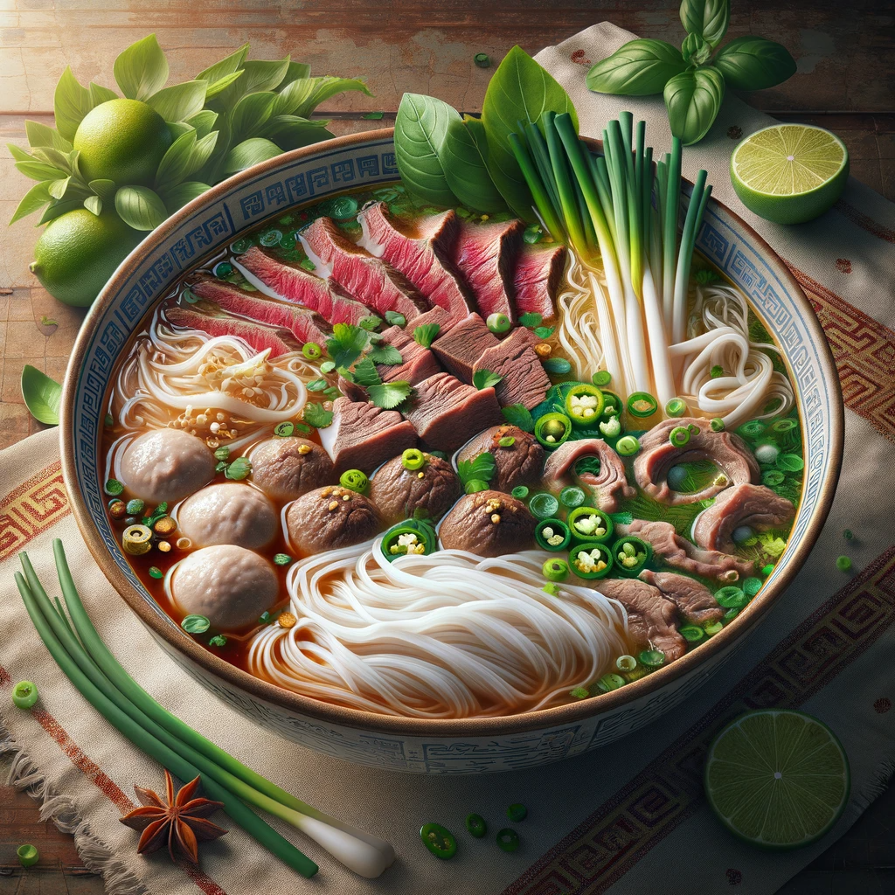

Phone: 360 933 4182
Address: 3212 Northwest Ave, Bellingham, WA 98225
Hours: Monday - Saturday: 11 am - 8 pm
Phở tái bộ viên
Dive into the depths of Vietnamese culinary tradition with our Phở Tái Bò Viên. This beloved beef noodle soup combines the best of both worlds: thinly sliced rare beef (Tái), and hearty beef meatballs (Bò Viên). All these elements are delicately placed in a steaming, aromatic beef broth that's rich in flavor, alongside flat rice noodles. Garnished with fresh green onions, cilantro, and white onions, each spoonful is a burst of freshness and depth. To enhance your dining experience, we serve it with classic sides like basil, lime wedges, bean sprouts, and sliced jalapenos, allowing you to tailor the taste to your liking. Savor this exquisite blend of textures and flavors in our warm, authentic Vietnamese eatery setting.
Veggie phở
Delight in the wholesome goodness of our Veggie Pho, a vegetarian twist on the classic Vietnamese noodle soup. Immerse yourself in a bowl full of rich, aromatic vegetable broth, teeming with soft rice noodles and an assortment of fresh, vibrant vegetables like tender broccoli, crisp carrots, earthy mushrooms, and protein-rich tofu. Each spoonful is a celebration of flavors, garnished with a sprinkle of green onions, fresh cilantro, and crunchy bean sprouts. To further enhance your dining experience, we offer sides of zesty lime wedges, fragrant basil, and spicy chili sauce, giving you the freedom to tailor the dish to your palate. Perfect for vegetarians and health-conscious diners alike, this dish is a testament to the versatility and depth of Vietnamese cuisine, served in a cozy, inviting restaurant atmosphere.
Phở gà
Indulge in the comforting flavors of our Pho Ga, a quintessential Vietnamese chicken noodle soup. This heartwarming dish presents a generous bowl of crystal-clear, flavorsome chicken broth, brimming with tender rice noodles and succulent slices of chicken. Garnished with a scattering of green onions, fragrant cilantro, and delicate onion slices, it brings a burst of freshness to each spoonful. Accompanied by a side plate of aromatic basil leaves, crisp bean sprouts, tangy lime wedges, and spicy sliced jalapenos, you have the option to customize your soup to your own taste preferences. Served in a traditional Vietnamese eatery setting, our Pho Ga is not just a meal, but an experience that encapsulates the soul of Vietnamese cooking.
Pho Bo
need pho bo description
Pho Dac Biet
need pho dac biet description
bánh mì thịt nướng
Experience the flavors of Vietnam with our Bánh Mì Thịt Nướng. This sandwich is a delightful blend of textures and tastes, featuring a crusty, freshly baked baguette filled with savory grilled pork. The pork, marinated in a medley of Vietnamese spices, is both tender and richly flavored. Alongside the pork, you'll find a colorful array of pickled carrots and daikon, adding a tangy crunch, along with crisp cucumber slices and fresh cilantro. A light spread of mayonnaise adds a creamy touch to this classic Vietnamese sandwich. Cut in half to reveal the vibrant layers of ingredients, it's served on a wooden board, inviting you to savor every bite of this authentic street food delicacy.
Cơm tấm
need Cơm tấm description
Bún bò Huế
Embrace the vibrant essence of Central Vietnam with our authentic Bún bò Huế. This hearty soup boasts a lemongrass-infused broth, enriched with chili oil for a gentle heat. Dive into a bowl filled with succulent beef shank, oxtail, and pig's knuckles, swimming alongside thick rice noodles. Topped with delicate slices of red onion, fragrant cilantro, and green onions, it's a feast for the senses. Served with a side platter of fresh basil, mint, lime wedges, and chili to tailor to your taste. A bold and spicy adventure in every spoonful.
hủ tiếu mì thập cẩm
Embark on a culinary journey with our Hủ Tiếu Mì Thập Cẩm, a dish that celebrates the diversity of Vietnamese flavors. This mixed noodle soup combines the delicate textures of thin rice noodles (Hủ Tiếu) and hearty wheat noodles (Mì) in a rich, clear broth. Each bowl is adorned with an array of toppings: tender slices of pork, succulent shrimp, savory quail eggs, and slices of fish cake, creating a medley of tastes in every bite. Garnished with fresh chives, crispy fried shallots, and a hint of black pepper, this soup is a true feast for the senses. Served with lime wedges and aromatic herbs on the side, it's a dish that brings the essence of Vietnam to your table. Enjoy this symphony of flavors in our cozy, inviting dining environment.
Cà phê sữa đá
Delve into the rich, aromatic world of Vietnam with our Cà Phê Sữa Đá. This traditional Vietnamese iced coffee is a testament to the art of coffee brewing. It features a bold, dark coffee, layered over sweetened condensed milk in a tall, clear glass, creating a visual and taste sensation. Served with ice cubes for a refreshing chill, this drink is ideal for savoring on warm days or as a delightful pick-me-up. Accompanied by a long spoon for the perfect blend, each sip offers a harmonious mix of strong coffee and creamy sweetness. Enjoy this iconic beverage in our inviting café, where each cup captures the essence of Vietnamese coffee culture.
Bubble Tea
Indulge in the subtle elegance of our Creamy Milk Tea, a popular Asian beverage reimagined without the boba. Served in a tall, transparent glass, this drink showcases the rich, amber hue of expertly brewed tea, layered with a luxurious creamy top. The blend of milk and tea offers a perfect harmony of flavors – creamy yet not overpowering, allowing the natural tea notes to shine through. Accompanied by a thick straw, it's a modern twist on a beloved classic. Sip and savor this velvety smooth drink in our cozy, contemporary café setting, where simplicity meets sophistication.